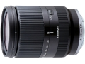

采用17片13组的镜头结构，最近对焦距离为0.5m，最大放大倍率为0.27倍。
成像挺好，焦段方便
成像还好
变焦很不顺，要用很大力才可以
非常好的大变焦头，各焦段优秀。一镜走天涯！
做工扎实，无松旷感，分量十足，与奶七般配。锐度不错，色彩比较忠实，不夸张。净身小巧方便携带。【防抖不是一般的好，非常给力】
变焦环不够顺滑，阻尼过大，不利摄像。色彩不是很通透。 光圈在大一级会更好。价格偏高。长焦端暗处对焦差点。